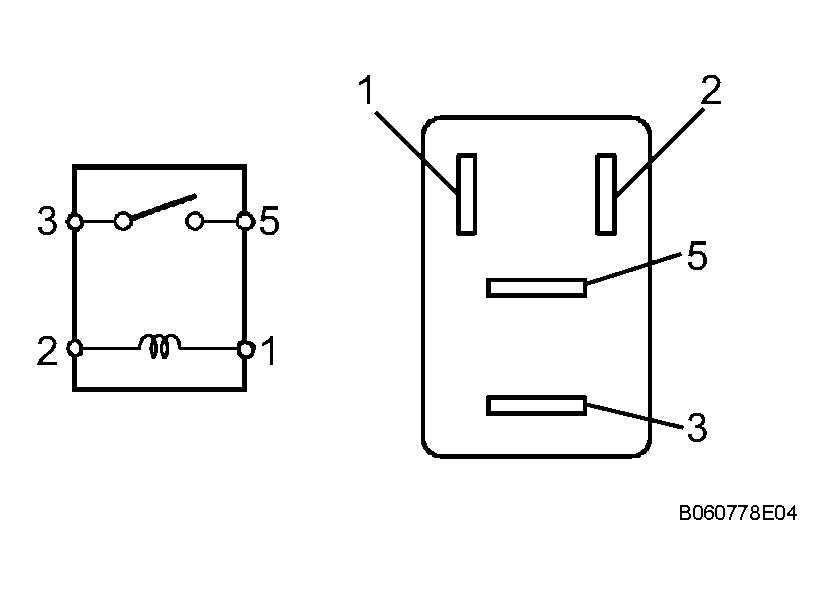

Home
>>
Scion
>>
2006
>>
xB Standard
>>
Repair and Diagnosis (Single Page)
>>
Accessories & Equipment
>>
Window Motors & Regulators
>>
Windshield/Window Glass
>>
Defogger Relay
>>
On-Vehicle Inspection
On-Vehicle Inspection
REMOVE DEFOGGER RELAY
Remove the defogger relay from the instrument panel junction block.
INSPECT DEFOGGER RELAY
Measure the resistance of the relay.
Standard resistance
TESTER CONNECTION SPECIFIED CONDITION
Tester Connection
Specified Condition
3 - 5
10 kΩ or higher
Below 1 Ω (when battery voltage is applied to terminals 1 and 2)
If the result is not as specified, replace the relay.
INSTALL DEFOGGER RELAY
Fig 1: Inspecting Defogger Relay

Courtesy of © TOYOTA, LICENSE AGREEMENT TMS1002